Comparison 1.6.5/1.6.5-1/patch (#4276)
The images are screenshots showing the results of running
JXPanelVisualCheck.interactiveBackgroundAlphaToggleOpaque. In each, we
have three panels side-by-side, its setup hinted at by the text of the
titled borders:
- - core JPanel with semi-transparent background color (for comparison)
- - JXPanel with semi-transparent background color
- - JXPanel with solid background color and container transparency
The text of the contained label shows the return value of isOpaque.
The screenshots show the visuals after:
- initial (default opaque is true)
- after toggling opaque off
- after toggling opaque on again
- after resizing (to get rid of artefacts)
Sequence is left-to-right, then down and left to right again.
Release 1.6.5/1.6.5-1 (Metal)
Screenshots
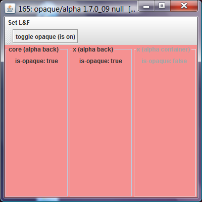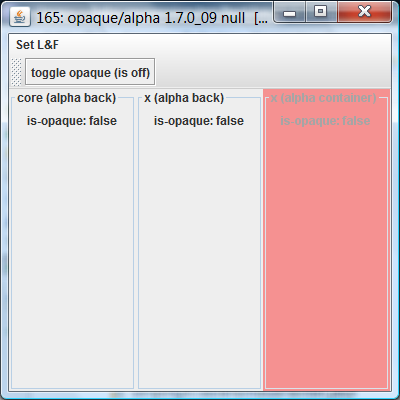
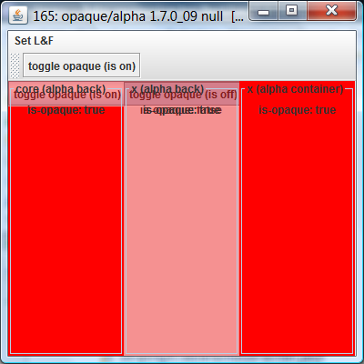
The issues
- toggling opaque off paints the background color (should not)
- toggling opaque on again has painting artefacts in core (expected) and x (should be handled) with transparent background
- after resizing (to get rid of artefacts): the panel with
container transparency is fully opaque, that is we can't get easily
back to initial
Patch (Metal)
Can be enabled by setting UIManager.put("JXPanel.patch") early in the test. Note: the patch is not meant for production use, but just for being able to easily run diverse test cases with a modified implementation!
Screenshots
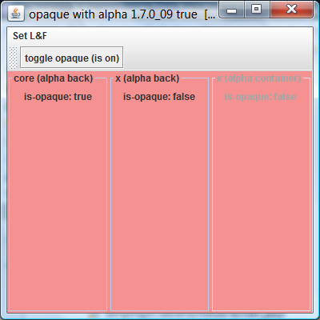
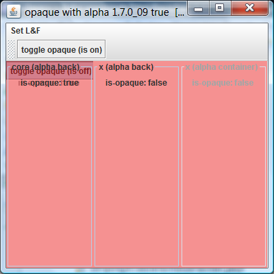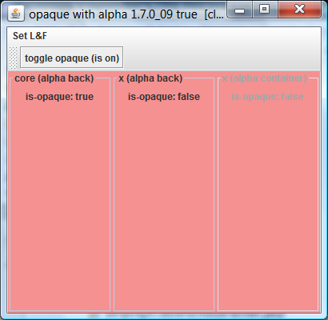
(Solved) Issues
- the container-transparent panel does not paint the background if opaque off
- no painting artefacts (in xpanel) when toggling back to opacity
- container transparency retained
Releases (Nimbus)
Screenshots 1.6.5-1
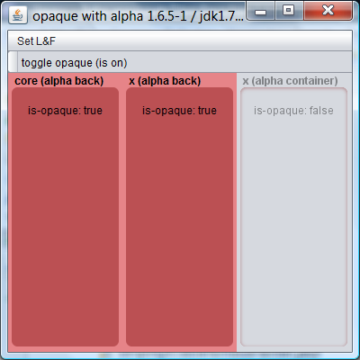
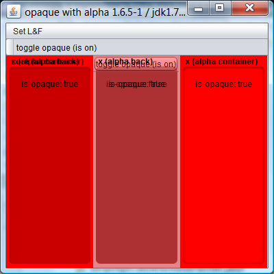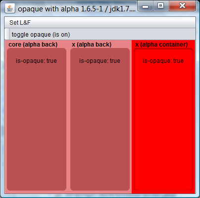
Issues
- original opaque: background not painted for container alpha
- painting artefacts when turning opaque on again
- solid background with container alpha
- "inner" background (the rounded area inside the border) not painted with container alpha
Screenshots 1.6.5
just historically interesting, to see the difference compared to the regression release: background is painted always, toggling opaque off has no effect
 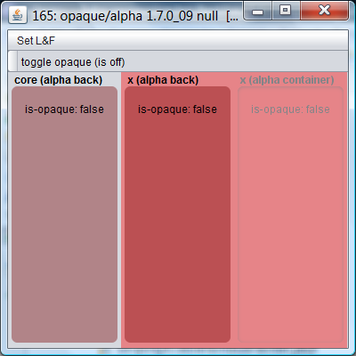
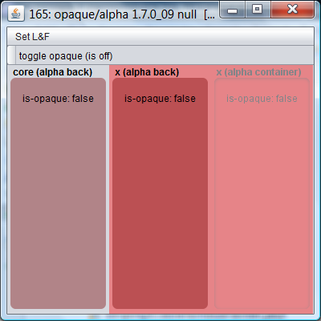
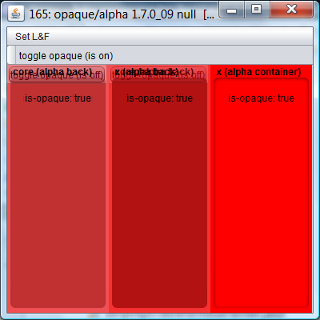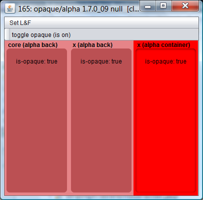
Patch (Nimbus)
Screenshots
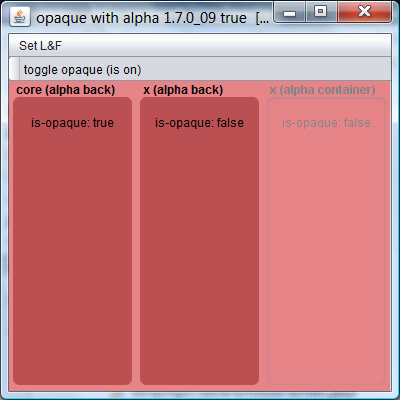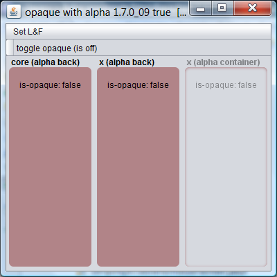
 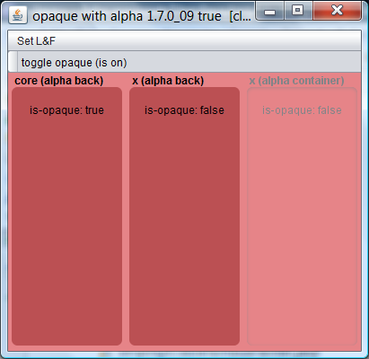
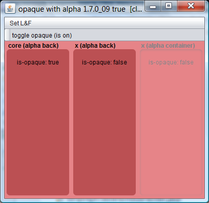
(Solved) Issues
- Background filled for all initially
- Background not filled if opaque off
- Background filled again on toggling opaque on again, no painting artefacts
Issues
- "inner" background (the rounded area inside the border) not painted with container alpha